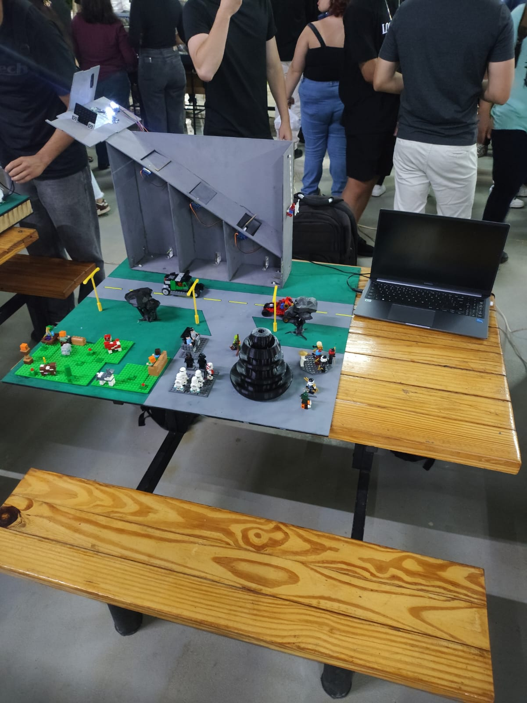

An intelligent prototype capable of automatically identifying and separating recyclable materials (metal, paper and plastic) using sensors and automation.
Solid waste production is constantly growing. Despite awareness campaigns, the difficulty of proper sorting results in the waste of recyclable materials and increases environmental impact.
This project is justified by the need to encourage sustainable habits through accessible technology, making the recycling process practical and preventing common disposal errors.
Live Prototype

Hardware Setup
Real-time processing for sorting logic.
Precise material identification via sensors.
Initially planned with AI via camera, the project pivoted to Color Sensors connected to Arduino to ensure technical feasibility and faster response times.
Development of an inclined ramp where the material slides to a sorting point, allowing gravity to facilitate the separation flow.
The sensor recognizes the material via colors (Yellow: Metal, Red: Plastic). The Arduino activates servomotors that direct the waste to the correct bin.
Implementation of a real-time system that records every item processed (e.g., 11 metals, 9 plastics), allowing precise monitoring of recycling efficiency.
A gamified proposal for neighborhoods where reaching recycling goals triggers social rewards, such as wheelchair donations or community cultural events.
AI Computer Vision
Reimplementing the initial plan for camera-based material recognition to increase sorting precision
Mobile App Integration
Developing a dedicated app for citizens to track their "Environmental Score" and redeem rewards locally
Energy Autonomy
Equipping the unit with solar panels to ensure 100% sustainable operation in public spaces